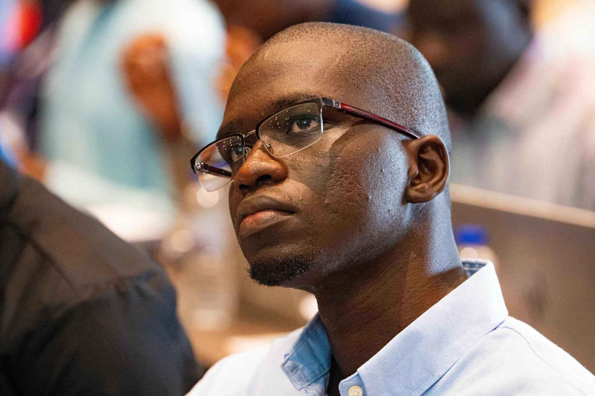
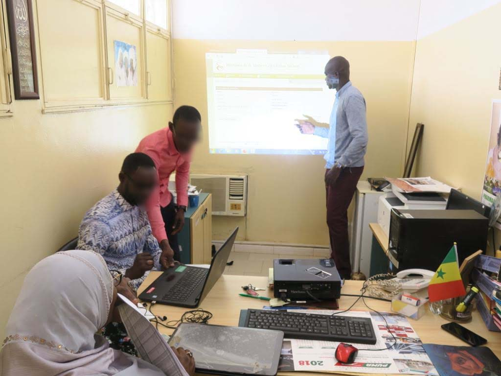
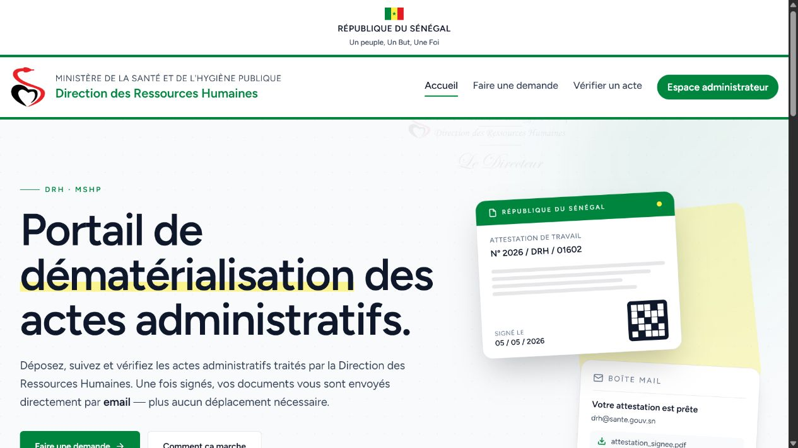
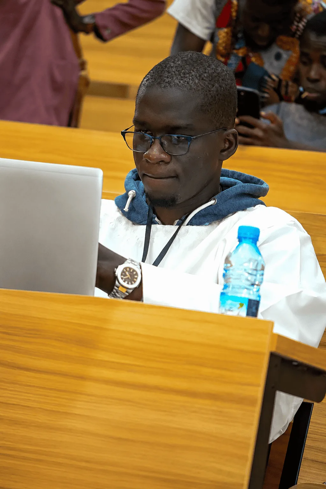

modernising government and health systems.
In service of public impact
Turning complex public needs into systems adopted in the field.
Digital health · Information systems · Interoperability
I support public institutions and their partners from needs assessment to the deployment of reliable, interoperable and sustainable solutions.
Senegal · Available for national and international assignments

supported through the deployment and adoption of iHRIS.
managed in the national health workforce information system.
My mission
Useful systems.
Empowered teams.
Better decisions.
Design
Translate operational realities into architectures, platforms and services suited to public institutions.
Connect
Make data, standards and systems work together — iHRIS, DHIS2, ERP, X‑Road and HL7 FHIR — within a governed framework.
Deploy
Support teams, train users and lead change so solutions are sustainably adopted.
Flagship work
From the field to the platform.
Three assignments that show how an institutional challenge becomes a usable, adopted and sustainable system.

01
iHRIS
- Role
- Administrator and technical lead
- Contribution
- Deployment across 14 regions, data quality, training and version 5 migration.
- Outcome
- A national HRIS covering about 25,000 health workers.

02
MIRSAS & e‑DRHSanté
- Role
- Engineer and technical project lead
- Contribution
- Design, development, deployment, documentation and training.
- Outcome
- HR procedures transformed into accessible, traceable digital journeys.

03
Interoperability & GovTech
- Role
- National expert and technical contributor
- Contribution
- PINS/X‑Road, DHIS2–iHRIS–ERP X3 data exchange and GovNum requirements.
- Outcome
- Frameworks and architectures that connect public services and govern data.
Additional work
Experience built in demanding environments.
Method
From need to adoption.
A method combining technical rigour, field knowledge and capacity transfer.
Frame
Needs assessment, workshops and requirements.
Architect
Processes, data, standards and technology choices.
Deliver
Development, testing, documentation and production.
Embed
Training, support and change management.
Experience
Two cultures: software and health programmes.
Ministry of Health — Human Resources Directorate
Technical project lead, software engineer and administrator of national health workforce systems.
GIZ / GOPA — National expert
Requirements for the GovNum Platform as part of the Goin’ Digital project.
DEEG — Full-stack consultant
Two interoperable platforms for gender data coordination and SNEEG monitoring and evaluation.
Health MBA, Software Master’s, Digital Health diploma & HL7 FHIR
A multidisciplinary background connecting public strategy, health programmes and engineering.
Your next assignment
Let’s build a public system that lasts.
Available for assignments in digital health, interoperability, information systems and public-sector digital transformation.